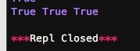

类和实例
在Python中，定义类是通过class关键字：
class Student(object):
pass
class后面紧接着是类名，即Student，类名通常是大写开头的单词，紧接着是(object)，表示该类是从哪个类继承下来的，继承的概念我们后面再讲，通常，如果没有合适的继承类，就使用object类，这是所有类最终都会继承的类。
#-*- coding: utf-8 -*-
class Students(object):
"""docstring for Students"""
def __init__(self, name, score):
super(Students, self).__init__()
self.name = name
self.score = score
注意到__init__方法的第一个参数永远是self，表示创建的实例本身，因此，在__init__方法内部，就可以把各种属性绑定到self，因为self就指向创建的实例本身。
和普通的函数相比，在类中定义的函数只有一点不同，就是第一个参数永远是实例变量self，并且，调用时，不用传递该参数。除此之外，类的方法和普通函数没有什么区别，所以，你仍然可以用默认参数、可变参数和关键字参数。
数据封装
面向对象编程的一个重要特点就是数据封装，创建实例需要给出name和score，而如何打印，都是在Student类的内部定义的，这些数据和逻辑被“封装”起来了，调用很容易，但却不用知道内部实现的细节。
例如下面增加一个成绩分类的方法：
#-*- coding: utf-8 -*-
class Students(object):
"""docstring for Students"""
def __init__(self, name, score):
super(Students, self).__init__()
self.name = name
self.score = score
def print_score(self):
print '%s:%s' % (self.name, self.score)
def get_grade(self):
if self.score >= 90:
print 'A'
elif self.score >= 60:
print 'B'
else:
print 'C'
bart = Students('Bart', 59)
lisa = Students('梁中豪', 100)
bart.print_score()
bart.get_grade()
lisa.print_score()
lisa.get_grade()
访问限制
在Class内部，可以有属性和方法，而外部代码可以通过直接调用实例变量的方法来操作数据，这样，就隐藏了内部的复杂逻辑。
但是，从前面Student类的定义来看，外部代码还是可以自由地修改一个实例的name、score属性
如果要让内部属性不被外部访问，可以把属性的名称前加上两个下划线__，在Python中，实例的变量名如果以__开头，就变成了一个私有变量（private），只有内部可以访问，外部不能访问，所以，我们把Student类改一改：
#-*- coding: utf-8 -*-
class Students(object):
"""docstring for Students"""
def __init__(self, name, score):
super(Students, self).__init__()
self.__name = name
self.__score = score
def print_score(self):
print '%s:%s' % (self.__name, self.__score)
bart = Students('Bart', 59)
lisa = Students('梁中豪', 100)
bart.print_score()
lisa.__name
改完后，对于外部代码来说，没什么变动，但是已经无法从外部访问实例变量.__name和实例变量.__score了：

如果又要允许外部代码修改score,可以给Student类增加set_score方法.这里跟java很像。不在过多叙述。
继承和多态
在OOP程序设计中，当我们定义一个class的时候，可以从某个现有的class继承，新的class称为子类（Subclass），而被继承的class称为基类、父类或超类（Base class、Super class）。
继承最大的好处是子类获得了父类的全部功能。由于Animial实现了run()方法，因此，Dog和Cat作为它的子类，什么事也没干，就自动拥有了run()方法，当然也可以对父类方法进行重写。
#-*- coding: utf-8 -*-
class Animal(object):
"""docstring for Animal"""
def run(self):
print 'Animal is running..'
class Dog(Animal):
pass
class Cat(Animal):
"""docstring for Cat"""
def run(self):
print 'Cat is running..'
dog = Dog()
dog.run()
cat = Cat()
cat.run()

获取对象信息
当我们拿到一个对象的引用时，如何知道这个对象是什么类型？
使用type()
基本类型都可以用type()判断：
# -*- coding: utf-8 -*-
print type(123),type('str'),type(None)

Python把每种type类型都定义好了常量，放在types模块里，使用之前，需要先导入：
# -*- coding: utf-8 -*-
import types
print type('abc')==types.StringType
print type(u'abc')==types.UnicodeType
print type([])==types.ListType
print type(str) == types.TypeType

最后注意到有一种类型就叫TypeType，所有类型本身的类型就是TypeType.比如int，str等
使用isinstance()
我们使用isinstance()来判断class的类型，例如：
class Animals(object):
"""docstring for Animals"""
pass
class Cat(Animals):
"""docstring for Cat"""
pass
class Dog(Animals):
"""docstring for Dog"""
pass
a = Animals()
d = Dog()
h = Cat()
print isinstance(h, Cat),isinstance(d, Dog),isinstance(a, Animals)

当然也可以用isinstance()来判断基本类型
使用dir()
如果要获得一个对象的所有属性和方法，可以使用dir()函数，它返回一个包含字符串的list，比如，获得一个str对象的所有属性和方法：
>>> dir('abc')
仅仅把属性和方法列出来是不够的，配合getattr()、setattr()以及hasattr()，我们可以直接操作一个对象的状态：
# -*- coding: utf-8 -*-
class Animals(object):
"""docstring for Animals"""
def __init__(self):
self.x = 9
def power(self):
print self.x * self.x
obj = Animals()
print hasattr(obj, 'x') # 有属性'x'吗？
print hasattr(obj, 'y') # 有属性'y'吗？
print setattr(obj, 'y', 19) # 设置一个属性'y'
print getattr(obj, 'y') # 获取属性'y'
print obj.y
也可以获得对象的方法：
fn = getattr(obj, 'power')
print fn,fn(),